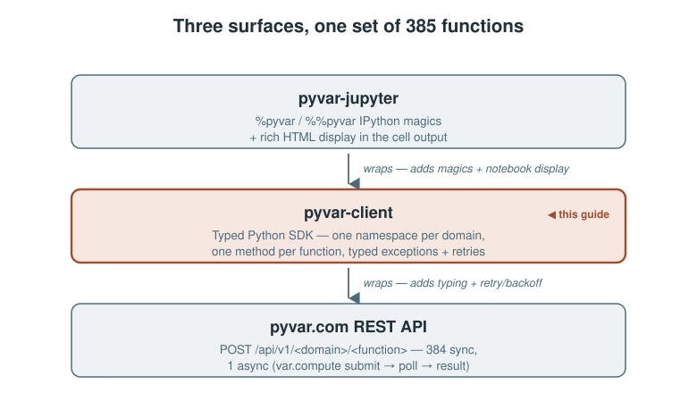
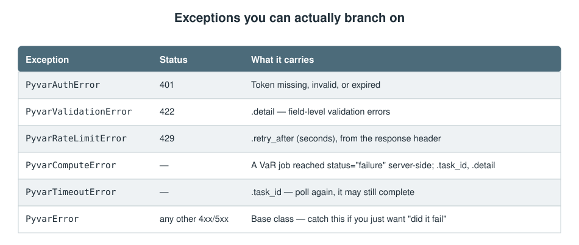
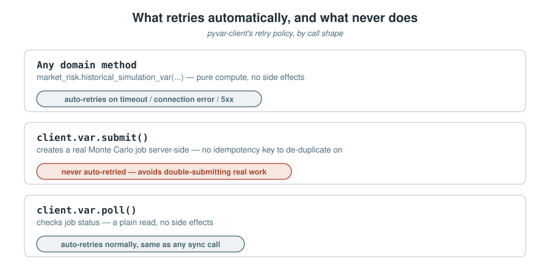

pyvar.com exposes 385 risk functions — VaR, credit scoring, derivatives pricing, liquidity ratios, and more — as a REST API. pyvar-client is the official Python SDK: one typed client, one namespace per domain, no HTTP client code to write by hand. This is a hands-on guide to actually using it, not a feature list.

Install and authenticate
pip install pyvar-client
Every call needs a bearer token — get a free-tier API key at pyvar.com (no password, no credit card). The client has no registration flow of its own; that's a one-time human step via email verification.
from pyvar_client import Client client = Client(api_key="eyJ...")
Or as a context manager, which closes the underlying connection pool on exit:
with Client(api_key="eyJ...") as client:
...
Your first call
Every domain hangs off client as its own namespace — client.market_risk, client.credit_risk, client.derivatives, and five more. One method per function, fully typed, so your editor's autocomplete already knows every parameter:
result = client.market_risk.historical_simulation_var(
returns=[0.01, -0.02, 0.015, ...], # historical daily log-returns
portfolio_value=1_000_000,
confidence_level=0.99,
)
print(result["var_pct"], result["var_abs"])
That's the whole pattern — 384 of the 385 functions work exactly this way: call it, get a dict back.
A second, ready-to-use example: credit scoring
Not every function is about VaR. client.credit_risk.altman_z_score_credit_scoring runs the Altman (1968) Z-score for a public manufacturer — plain scalar inputs, no historical series required:
result = client.credit_risk.altman_z_score_credit_scoring(
working_capital=1_200_000,
retained_earnings=3_400_000,
ebit=900_000,
market_value_equity=8_000_000,
sales=5_500_000,
total_assets=10_000_000,
total_liabilities=4_000_000,
)
print(result) # Z-score + zone: safe (>2.99) / grey (1.81-2.99) / distress (<1.81)
Every one of the 385 functions follows this same shape — the parameter names and docstrings come straight from the same OpenAPI schema the REST API itself publishes, so there's nothing here that isn't equally discoverable by reading portal/functions.json or the live /docs endpoint.
The one async function: Monte Carlo VaR
POST /var/compute is the single exception to "call it, get a result." It's a real Monte Carlo job dispatched to pyvar's Celery/SQS worker fleet, so it returns a task_id immediately, not a finished answer. client.var wraps the submit/poll cycle:
# Blocks: submits, polls until done, returns the finished result.
result = client.var.compute(
portfolio_value=1_000_000,
returns=[...],
n_simulations=100_000,
)
Or drive it yourself, if you'd rather not block:
task_id = client.var.submit(portfolio_value=1_000_000, returns=[...]) status = client.var.poll(task_id) # checks once, no blocking
One asymmetry worth knowing: above a simulation-count threshold, the API offloads the full loss distribution to S3 and returns a presigned_url instead of the inline loss_dist. compute() returns exactly what the API returned either way — fetching the presigned URL yourself is a plain httpx.get() if you need the raw distribution, not something the client silently does on your behalf.
Errors you can actually branch on
Every non-2xx response raises a typed exception, not a generic HTTP error:

from pyvar_client import PyvarRateLimitError, PyvarValidationError
try:
client.market_risk.historical_simulation_var(returns=[...], portfolio_value=1_000_000)
except PyvarValidationError as e:
print(e.detail)
except PyvarRateLimitError as e:
print(f"retry after {e.retry_after}s")
Retries, and the one call that's never auto-retried
Every synchronous domain function is idempotent — pure compute, no side effects — so connection errors, timeouts, and 5xx responses retry automatically with exponential backoff. client.var.submit() is the deliberate exception: it's never auto-retried, because retrying a job submission blindly risks double-submitting real compute work against an API with no idempotency-key mechanism to de-duplicate on. client.var.poll() is a read, so it retries normally.

The CLI that comes with it
pip install pyvar-client also installs a pyvar command — stdlib argparse only, no extra install step:
export PYVAR_API_KEY="eyJ..."
pyvar market_risk historical_simulation_var --params-json \
'{"returns": [0.01, -0.02, 0.015], "portfolio_value": 1000000}'
Call any function with no parameters and it prints the docstring and signature instead of making a doomed request:
$ pyvar market_risk historical_simulation_var --api-key "$PYVAR_API_KEY" historical_simulation_var(*, returns: list[float] | list[list[float]], portfolio_value: float, ...) -> dict[str, Any] Non-parametric Historical Simulation VaR...
Browse what's available with no credentials at all:
pyvar list-domains pyvar list-functions --domain market_risk
Exit codes mirror the exception table above (2 = auth, 3 = validation, 4 = rate limit, 5 = compute/timeout) — enough to branch on in a shell script without parsing stderr text.
Why 385 methods don't drift from the API
Hand-maintaining 385 typed methods against a REST API that keeps changing is exactly how a client silently falls out of sync with what it wraps. pyvar_client/_generated/ is produced by codegen/generate.py, which reads the live OpenAPI schema directly from main.create_app().openapi() — not a hand-copied list. Regenerating after any API change is one command, and CI fails the build if committed output ever drifts from what regenerating actually produces — the same discipline the main pyvar repo uses for its own plugin and portal catalogues.
The one hand-written exception is client.var itself — because submit/poll/compute is a genuinely different call shape from every other function's request/response pattern, not a mechanical variation the generator could produce safely.
Try it
pip install pyvar-client
from pyvar_client import Client
with Client(api_key="your-free-tier-key") as client:
result = client.market_risk.historical_simulation_var(
returns=[0.01, -0.02, 0.015, 0.008, -0.011],
portfolio_value=1_000_000,
)
print(result)
Sources
pyvar-client/README.md— install, quick start, errors, retries, CLI, codegen — the primary source for this article, quoted and lightly adapted throughout.pyvar-client/pyvar_client/_client.py,_var.py—Client.__init__,VarNamespace.submit/poll/compute, quoted directly.pyvar-client/pyvar_client/_generated/credit_risk.py—altman_z_score_credit_scoring's real signature and docstring, the source for the second worked example.pyvar-client/codegen/generate.py— the OpenAPI-schema-driven code generator described above.- PyPI: pyvar-client — the published package this article's install instructions target.